注意事項
- 成人急性期の通常酸素療法
- 鼻カニューレ、シンプルマスク、ベンチュリーマスク、リザーバー付きマスク
- 小児・新生児、在宅酸素療法、気管切開、人工呼吸器は対象外
- HFNCとNPPVは概要だけ。設定と管理は別ページで扱う
- 投与理由、デバイス、流量またはFiO2、目標SpO2
- 高二酸化炭素血症の既往・リスク、酸素アラートカード、直近の血液ガス
- 火気、可燃物、油脂、チューブの折れ・外れ
- 重い低酸素血症や急速な悪化は、酸素投与と同時に応援を要請
目的
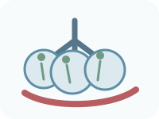
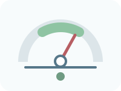
最初に決める目標SpO2
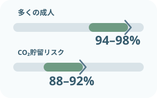
代表的な成人急性期の範囲
多くの成人：94〜98%
高二酸化炭素血症のリスク：88〜92%
後者は血液ガス結果が得られるまでの代表的な範囲。既往、疾患、個別指示で変わる。
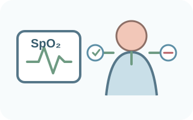
目標値と患者を同時に見る
SpO2だけで投与量を決めない。
呼吸仕事量、意識、循環、波形・信号、血液ガス、投与前後の変化を合わせる。
一酸化炭素中毒、蘇生直後、特定薬剤による肺障害などは別の指針が必要。観察項目
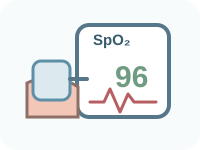
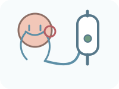
安静時だけでなく、体動・食事・排泄・睡眠時も確認。酸素を外した場面や移動後は再評価する。
酸素投与デバイス
流量と濃度の目安
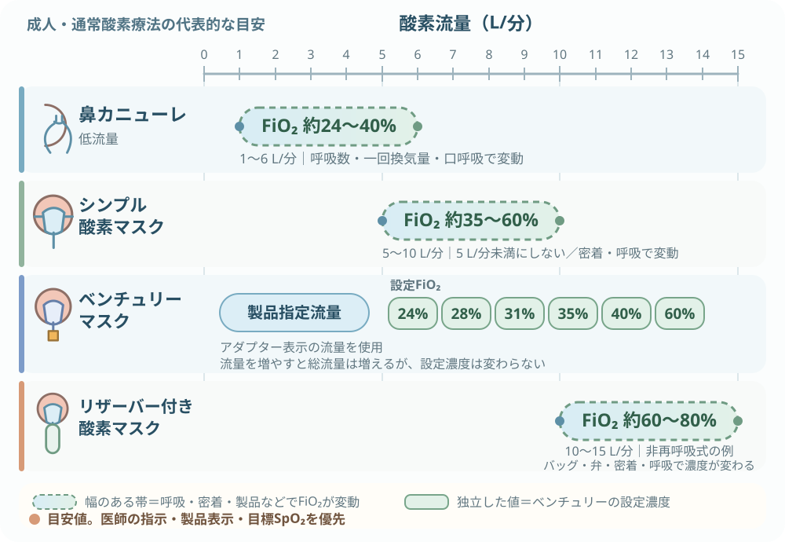
- 鼻カニューレ：代表流量1〜6L/分、FiO2約24〜40%。呼吸パターンで大きく変わる。
- シンプル酸素マスク：代表流量5〜10L/分、FiO2約35〜60%。5L/分未満にしない。
- ベンチュリーマスク：製品指定流量を使い、24、28、31、35、40、60%などの設定濃度から選ぶ。
- 非再呼吸式リザーバー付き酸素マスク：代表流量10〜15L/分、FiO2約60〜80%。バッグ、弁、密着、呼吸で変わる。
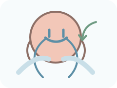
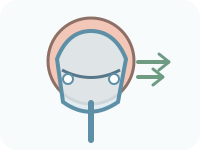
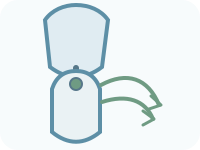
流量・濃度の範囲は代表的な成人用。製品ごとに違う。器具の表示、電子添文、医師の指示を優先する。
必要物品
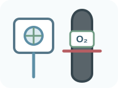
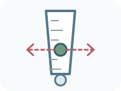
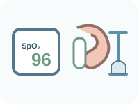
- 医療用酸素供給源
- 酸素流量計
- ボンベ使用時の酸素用圧力調整器
- 指示された酸素投与デバイス
- 酸素供給チューブ
- パルスオキシメータ
- 必要時、皮膚保護用パッド
- 必要時、固定用テープ
- 必要時、製品指定の加湿器
- 加湿器に指定された水
- 必要時、火気厳禁の表示
- 患者状態に応じた救急・吸引物品
加湿は一律ではない。流量、乾燥・不快感、分泌物、投与時間、製品の接続条件、院内手順で判断する。
手順
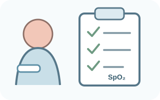
本人・指示・目標を照合投与理由、デバイス、流量またはFiO2、目標SpO2、開始・調整条件を確認。
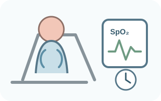
投与前の状態をつかむ呼吸、SpO2と信号、意識、循環を観察。CO2貯留リスクと直近の血液ガスも確認。
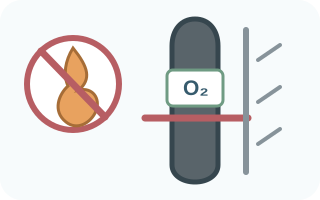
体位・環境・供給源を整える呼吸しやすい体位へ。火気と油脂を遠ざけ、ガス名、残量、接続口、チューブを確認。
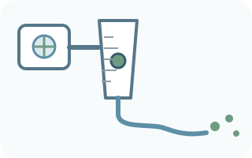
接続して指示値へ設定流量計とチューブを確実に接続。酸素が先端まで出ていることを確認する。
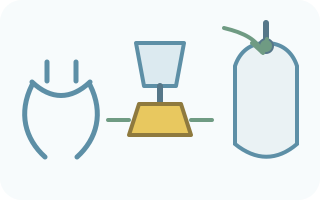
デバイス固有の準備ベンチュリーは指定アダプターと流量。リザーバーは装着前にバッグを膨らませる。
- 装着して圧迫・閉塞を除く
鼻・口へ正しく合わせる。締めすぎず、側孔・空気取入口を塞がない。耳や頬を保護。
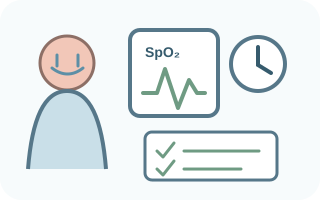
反応を再評価し記録数分以内に呼吸、SpO2、意識、循環を再確認。目標外・悪化は報告し、指示や手順に沿って調整。
酸素ボンベの残量確認
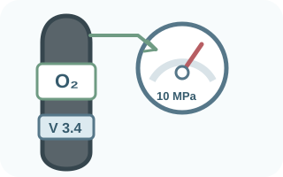
最初に読む2つ
容器の内容積「V」と、圧力計の値。
ガス名の医薬品ラベルも確認。通称「500Lボンベ」でも、計算には刻印・仕様の内容積を使う。
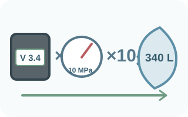
MPa表示の概算
残量（L）≒ 内容積（L）× 圧力（MPa）× 10
理論使用時間（分）≒ 残量（L）÷ 流量（L/分）
例：V 3.4L、10MPa、2L/分なら、約340L・約170分。
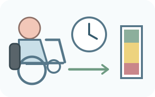
計算値を使い切らない
搬送時間、待ち時間、流量変更、機器誤差を見込む。
交換基準と安全係数は院内手順へ。十分な残量を選び、搬送中も圧力計を確認する。
- kgf/cm²表示：残量（L）≒ 内容積（L）× 圧力（kgf/cm²）
- 1MPa ≒ 10.2kgf/cm²
- どちらも概算。製品仕様と院内換算表を優先
安全余裕として残量に0.8をかける方法もある。全国共通の固定値ではないため、計算式へ一律には組み込まず、院内手順を確認する。
関連知識
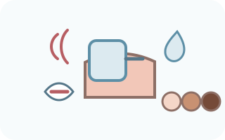
パルスオキシメータには誤差がある
数値、波形・信号、患者の症状をセットで読む。
体動、低灌流、冷え、爪、皮膚色、センサー位置などで測定がずれる。疑わしい値は測り直し、必要時は血液ガスへ。
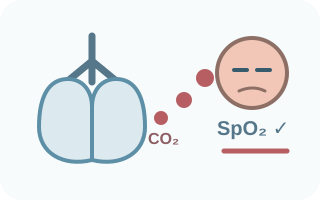
CO2貯留をSpO2だけで否定しない
酸素化が保たれていても、換気不全はありうる。
傾眠、頭痛、呼吸の浅さ、既往を確認。高リスクでは目標範囲と血液ガスを重視する。
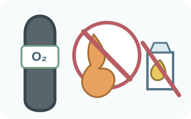
酸素は燃えないが、燃焼を強くする
医療施設では使用設備の周囲5m以内を火気禁止。
喫煙、火花、可燃物を避ける。バルブや圧力調整器へ油脂を付けず、ボンベは固定して静かに開閉する。
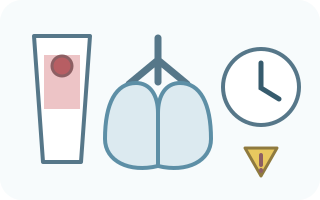
高濃度・長時間投与にも注意
必要な濃度を、必要な時間だけ。
高濃度酸素の長時間投与では酸素中毒の危険がある。目標内で減量・中止できるか継続して見直す。
HFNC・NPPVとの違い
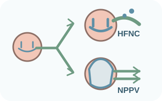
通常酸素から呼吸補助へ
HFNC：加温加湿した高流量ガスを太い鼻カニューレから送る。
NPPV：密着するマスクから陽圧をかけ、酸素化と換気を補助する。
どちらも通常酸素とは機器・設定・観察が異なる。詳しい導入と管理は別ページで扱う。
出典
- PMDA 電子添文「日本薬局方 酸素」2024年7月改訂
- 厚生労働省「医療ガスの安全管理について」
- British Thoracic Society「Guideline for oxygen use in adults in healthcare and emergency settings」
- AARC「Management of Adult Patients With Oxygen in the Acute Care Setting」
- 日本医療機能評価機構 医療事故情報収集等事業「酸素ボンベ残量の管理に関連した事例」
- PMDA 医療機器電子添文「酸素供給システム（ベンチュリマスク）」
- PMDA 医療機器電子添文「経鼻酸素カニューレ」
- PMDA 医療機器電子添文「KM 酸素療法キット（酸素マスク）」
- AARC「Oxygen Therapy for Adults in the Acute Care Facility」2002 Revision & Update
- FDA「Pulse Oximeters」